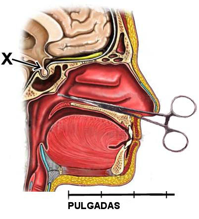
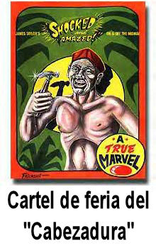

Amigos, la página que preparé anteriormente para el espacio de esta semana fue aplazada para poder presentar mis observaciones —y algunas de las del público— en relación con la presentación del 10 de febrero de 2005 del programa “Primetime Live” del canal de televisión estadounidense American Broadcasting Company. Se ocupó de un hombre llamado “Juan de Dios”, que trabaja en Brasil. Este fue un programa importante que podría haber sido un programa útil, productivo e informativo, pero fracasó en alcanzar esa norma. Continúen leyendo.
La publicidad pagada en ABC-TV para Juan de Dios
El programa trató del “sanador” brasileño João Teixeira, conocido popularmente en su país como João de Deus, lo que en español sería “Juan de Dios”. Emite sus discursos desde la “Casa de Dom Inácio”, un centro de curación en Abadiania, Brasil, un pueblito a más de 100 kilómetros al sudeste de la capital, Brasilia. Gente desesperadamente enferma de todas partes del mundo acuden en gran número a este lugar buscando curas, y hay un grupo de prósperas agencias organizadas para perpetuar la mitología en torno al hombre, reservar hoteles, vender paseos, recuerdos, amuletos y toda clase de material que satisfaga la necesidad de curación de esta gente vulnerable. Los recorridos cuestan un par de miles de dólares, aunque quienes los ofrecen son discretos a la hora de dar los precios reales. Sus instrucciones a los potenciales visitantes que solicitan visas es no mencionar que viajan a Brasil para este propósito, porque el gobierno no favorece tales viajes. Las estadías en los hoteles son como mínimo de dos semanas y pueden durar más.
¿Qué trae a estas víctimas desde tan lejos y tan variados lugares? Hay siete puntos principales sobre el “ministerio” de Juan de Dios que atraen la atención del público y los medios, trucos y otras aparentes anomalías que exigen respuestas:
El truco del fórceps en la nariz.
Los cortes al azar de la carne.
El “raspado” del globo ocular.
La ausencia de dolor inmediato como resultado de 1, 2 y 3.
La ausencia posterior de infección.
Los “trances” en los que entra Juan de Dios para “contactar espíritus”.
Las posteriores recuperaciones informadas por los pacientes.
Nos ocuparemos de estos temas a su turno. Pero primero, déjenme describirles
lo que me llevó ante las cámaras de ABC-TV el 25 de enero de 2005. La oficina del productor de ABC-TV Noticias, Chris Whipple, se puso en contacto conmigo en Florida y pidió que fuera a la ciudad de Nueva York para presentar mis opiniones y observaciones sobre el tema que Primetime Live estaba preparándose para emitir. Esta es una función importante de la JREF, de modo que accedí con gusto a ayudar.
ABC-TV Noticias, aparentemente, quería un punto de vista posiblemente escéptico sobre estos “milagros”. Yo ya había visto, hacía mucho, una videocinta preparada y distribuida por la organización en Brasil, una película que promocionaba sus presentaciones. En el video se revelaba con claridad poca información que presentara evidencias salvo alguno de los trucos comunes y afirmaciones engañosas realizadas por la organización Casa de Dom Inácio. ABC- TV también invitó al doctor Mehmet Oz, un cirujano cardíaco del Departamento de Cirugía de la Universidad de Columbia en Nueva York, para entrevistarse junto conmigo con su presentador ante cámaras, John Quiñones.
Viajé a la ciudad de Nueva York, con mis viáticos (pero ni mis honorarios ni otros pagos) cubiertos poar ABC-TV, y me presenté al estudio de grabación. En el área de espera, tuve la oportunidad de tener una larga conversación con el doctor Oz, y llegamos a un acuerdo general en varios puntos importantes (como los temas del dolor y la infección, puntos 4 y 5 más arriba) que seguramente surgirían en la videocinta. Sin embargo, también descubrí durante esa conversación que el doctor Oz tiene un punto de vista bastante singular del mundo real, a pesar de su profesión tan en contacto con la realidad. Apoya y ha escrito extensamente sobre “terapias complementarias” como la hipnosis, el “toque terapéutico”, la imaginación guiada, la reflexología, la aromaterapia, la plegaria, el yoga, y la “medicina energética”, y alienta su uso “en combinación con las últimas técnicas quirúrgicas”. El doctor Oz cree en el uso de las técnicas “alternativas” (a las que se refiere como “Medicina Global”) en un intento de
desbloquear y balancear los chakras (canales de energía), reforzando en consecuencia las capacidades de sanación naturales del cuerpo.
Su equipo de “atención médica complementaria” en Columbia sigue sus estudios usando “fotografía Kirlian”. Todas esas son nociones totalmente pseudomédicas, y empecé a sospechar por qué ABC-TV Noticias lo había elegido como participante.
Citando al doctor Oz:
A los cangrejos de río vuelven a crecerles los nervios, ¿verdad? Quizá hay cosas que podríamos recoger de nuestra psique que también nos permitan hacerlo.
Cierto, doctor Oz, pero se me ocurre que el enfoque científico es determinar que el fenómeno mismo existe en los seres humanos antes de presentar teorías de cómo funciona. De otro modo, habría investigadores desarrollando paralelos y filosofías para explicar la realidad del Ratón Pérez, para el cual hay evidencia anecdótica adecuada del mismo calibre que la evidencia de esas regeneraciones espirituales de órganos en seres humanos. Doctor, no se produjeron sanaciones en Abadiania, sólo indicaciones levemente esperanzadoras. Nunca se produjo evidencia sólida sobre este hombre Juan de Dios y sus afirmaciones. También le dijo usted a los televidentes de ABC-TV que la “cirugía visible”
[…] podría ser un viejo truco mágico, pero es uno bastante poderoso desde la perspectiva de un médico.
Doctor, usted supo de ese truco por mí durante nuestra conversación fuera de cámara antes de la grabación; en ese momento usted lo ignoraba. Pero ¿qué quiere decir por “poderoso”? ¿Lo bastante poderoso para traer a los bobos para que Juan de Dios los “sane”?
El doctor Oz lanzó este comentario sobre el truco del fórceps en la nariz, diciendo:
Me pregunto si tocar la glándula pituitaria puede influir en esos químicos que circulan entre el cuerpo y el cerebro.
Increíble. El doctor Oz está yendo a tientas para salvar este truco de feria y a Juan de Dios invocando una noción remota e improbable: que los fórceps que este charlatán inserta en las narinas de la víctima pueden tocar la glándula pituitaria y por lo tanto producir algun efecto verdadero. No, tachen eso. No es “improbable”, ¡es imposible! Miren el diagrama adjunto. Verán que la glándula pituitaria (marcada con la X) es accesible a través del pasaje nasal ¡sólo luego de que un instrumento ingrese cerca de 5.5 pulgadas (unos 15 centímetros) por la narina (el fórceps sólo puede entrar unas 4 pulgadas ó 10 centímetros) y atraviese dos gruesas paredes de hueso craneano! De nuevo, el doctor Oz está postulando teorías sobre un fenómeno que no existe! ¡No hay ninguna evidencia que muestre que Juan de Dios alguna vez haya obtenido otra cosa que repulsión al meter un fórceps por la nariz de una víctima! ¡Ninguna!
La sesión de grabación en ABC-TV Noticias
Comenzó la grabación. Me senté frente a las cámaras de ABC-TV junto con el doctor Oz, preparado para entrar en diálogo con el doctor y responder preguntas de John Quiñones. Grabamos durante casi una hora, comentando sobre el material de video de Brasil correspondiente que nos mostraban en un monitor del estudio.
El resultado de esta sesión de grabación, inserto en la emisión del 10 de febrero de 2005, en una edición extendida de una hora de Primetime Live, no fue para nada lo que yo esperaba. Fui introducido como “un refutador de lo paranormal”, sin otra caracterización. La frase apertura de la afirmación que hice en mi aparición de 19 segundos ni siquiera era mía. La grabación de video fue editada para que pareciera que estas fueron mis palabras espontáneas:
No hay mayores mentirosos en el mundo que los falsos médicos, a excepción de sus pacientes.
Esas no eran mis palabras. Dije claramente, precediendo a esa cita: “Para citar a Ben Franklin…”, pero parece que ABC-TV Noticias decidió poner esas palabras en mi boca para demostrar qué clase de irritable viejo cascarrabias y testarudo soy, que simplemente decidí oponerme a Juan de Dios acusándolo de ser un fraude médico. Esto parecía señalar que no tenía nada que aportar al programa salvo etiquetar groseramente a Juan de Dios, y burlarme de él sin agregar nada a la discusión, a la vez que no proporcionaba ninguna información experta.

El resto de mi frase fue:
Recuerden, esta gente ha ido allí para obtener este tipo extraño de tratamiento. Si tienen que admitir “No, esto no me sirvió, me estafaron”, tienen que decir “¡Fui lo bastante estúpido para ir allí y pensar que clavarme algo en la nariz me curaría la espalda!”.
Por qué los pacientes apoyan el fraude
Dije eso para ilustrar la verdad de la observación de Ben Franklin que acabo de citar, que aquellos que tontamente se dejan embaucar por tales fraudes con frecuencia son los más feroces defensores de su decisión inicial de participar, y deciden apoyar el fraude incluso luego de que les falla, racionalizando e incluso exagerando para fortalecer su convicción. No pueden creer ni aceptar que fueron tan tontos; y recuerden, están desesperados y por lo tanto vulnerables, las dos situaciones que los llevaron allí en principio.
Tenía mucho más que decir sobre el tema, y lo dije. ABC-TV Noticias no lo quería, y lo descartaron, aunque si lo hubieran usado, los televidentes no sólo hubieran estado mejor informados, sino que hubieran comprendido la verdadera naturaleza de la información que les estaban presentando. Amigos, no soy nuevo en la televisión; soyh muy consciente del hecho de que la mayor parte de una entrevista puede no ser incluida en el producto editado final, pero la mayoría de lo que le proporcioné a ABC-TV para que lo usara eran datos pertinentes para obtener claridad en un asunto controvertido y de importancia crítica; y provenía de un experto. El doctor Oz, que no sabe nada sobre los posibles trucos, apareció en seis largos fragmentos, presentando lo que, en mi opinión, fueron las frases apropiadamente mágicas que ABC-TV prefería ver en la pantalla.
(De paso, creo que me equivoqué en esa cita de Franklin. Realmente debería haber sido “No hay mayores mentirosos que los médicos falsos, a excepción de sus pacientes”.)
Nótese también que la organización de Juan de Dios ha establecido una situación en la que simplemente no pueden fallar; si sus víctimas no se recuperan, no es una falla de las fuerzas mágicas, sino que es culpa del paciente. Afirman que a veces una persona viene a ellos para curarse “demasiado tarde”, así que no sucede. Si un paciente no tiene “la actitud correcta” o no “mantiene la fe”, la sanación fallará. Si no se siguen las reglas -com o pasó con John Quiñones, según vimos antes- no se producirá curación. Dicen que uno tiene que esperar al menos cuarenta días para ver alguna curación (¡mucho después de que la víctima ha dejado Brasil!) y a veces tienen que masar hasta dos años antes de que se vea algún efecto. Todo esto es un escenario a prueba de fallas, uno que me he encontrado muchas veces en el fraude de la sanación por la fe.
Fórceps por la nariz
El dramático truco de los fórceps por la nariz, le dije al productor (y lo afirmé claramente a la cámara durante la sesión de grabación) es un viejo truco de feria que mi amigo Todd Robbins me dice que se remonta a los jaduwallahs de la India y lo adoptó de su repertorio un mago estadounidense llamado Melvin Burkhardt, y se hizo por primera vez en este continente en 1926. Ahora se lo conoce como “El truco del cabezadura” y normalmente se hace con un clavo pesado de acero de 12cm clavado por la nariz hacia la parte de atrás de la garganta, una ruta clara y recta que parece improbable. Lo realizan hoy más de 100 magos en ferias y espectáculos en todo el mundo, y Juan de Dios lo usa simplemente para impresionar a sus víctimas, aun que él lo hace más fácil usando fórceps suaves niquelados (o de acero inoxidable). ¿Y qué hay en el hisopo que sostienen los fórceps? ¿Qué es esa “agua bendita” que usa Juan de Dios? No lo sabemos.
Obtuve de Todd Robbins una videocinta de él haciendo el truco, y la llevé al productor de ABC-TV Noticias en Nueva York, quien decidió no usarla aunque era claramente el truco usado por Juan de Dios. ABC-TV Noticias decidió no informar a su audiencia que este impresionante “milagro”, usado en cada oportunidad por el farsante para quien estaban proporcionando este espacio pagado, es sólo un truco común de feria, ¡ni aclararon que tiene una explicación muy simple y en lo absoluto sobrenatural!
El presentador John Quiñones le dijo a la audiencia que tenía un problema con una articulación inflamada en su hombro izquierdo y se había sometido al tratamiento de Juan de Dios como prueba de sus poderes. Los asistentes de Casa de Dom Inácio le dijeron que se sometiera a “cirugía invisible”, que consistía simplemente en meditar por dos días y seguir una serie de instrucciones simples (nada de sexo, nada de cerdo, nada de alcohol y nada de pimienta) y luego esperar cuarenta días para ver los resultados. John informó que no hubo cambio alguno en su condición, ¡pero justificó la falla revelando que no había seguido las instrucciones! ¿Por qué este periodista investigador profesional, trabajando activamente en una filmación de un medio importante que examinaba las afirmaciones de este charlatán, decidió no seguir las instrucciones recibidas, proporcionando una excusa conveniente para la falla de la “magia”? ¿Y por qué, sabiendo que Quiñones había invalidado su propia prueba violando las reglas, los editores y productores de ABC-TV decidieron incluir igualmente ese evento en el programa?
Hay dos tipos de “operaciones” realizadas por Juan de Dios, “visibles” e “invisibles”. Las “visibles” son los fórceps por la nariz, el descuidado cortajeo al azar de la carne, y la maniobra del cuchillo en el ojo. Las “invisibles” consisten de plegarias, meditación, la lectura de las sagradas escrituras, y sentarse con los ojos cerrados. ¿Por qué a Quiñones no se lo operó de forma “visible”? ¿Quizá el “sanador” era lo bastante inteligente para no producir incomodidad física real al representante de un poderoso medio estadounidense que podría darle (y le dio) publicidad y reconocimiento invaluables? Esos campesinos que decidieron que se los sondeara y cortara eran descartables; hay una provisión interminable de ese forraje.
Otro aspecto inesperado de esta clase de fenómeno
He realizado el famoso truco de la “cirugía psíquica” muchas veces, en todo el mundo, de forma destacada en el “Tonight Show” con Johnny Carson hace muchos años. Consiste en que el artista aparentemente penetra el cuerpo de la persona que está en la mesa, y extrae bultos sanguinolentos que se dice son tumores. Esto se presentó claramente como un truco, y expliqué en Tonight Show que se lo realizaba del mismo modo que los farsantes de las Filipinas aún usan para engañar a sus víctimas. Imagínense mi sorpresa cuando Fred DeCordova, el productor de Tonight Show, me llamó para decirme que sólo en la oficina de Los Ángeles de NBC-TV habían recibido 102 llamadas telefónicas luego de la transmisión, ¡todas ellas preguntando cómo contactar a los “cirujanos psíquicos” filipinos! El sencillo mensaje no había llegado a destino, evidentemente.
Bueno, creo que este programa de la ABC-TV alentará al público (incluso más de lo que mi aparición en Tonight Show puede haberlo hecho) a reservar viajes a Brasil para someterse a la carnicería que Juan de Dios les inflinge a sus víctimas. La enorme diferencia es que mientras los “cirujanos” filipinos raramente hacen incisiones en la piel de sus clientes, el farsante brasileño lo hace con frecuencia, y eso significa no sólo una pérdida financiera, sino también muy probablemente la pérdida de la vida. ¿ABC-TV está dispuesta a aceptar el dolor y el daño que sufrirá esa gente mal informada?
El raspado del ojo
Juan de Dios sienta a un sujeto para su truco de la “cirugía visible” y aparentemente raspa el ojo del paciente con el borde de un cuchillo. Creo que esta es una variante del truco normal (ilustrado en la página 177 de mi libro “Fraudes paranormales” [en su versión en inglés, “Flim-Flam!”]) en el que una hoja de cuchillo se introduce bajo el párpado de un sujeto con poco o ninguna incomodidad como resultado. Con el farsante brasileño, el movimiento de “raspado” lo vuelve mucho más temible, pero por varias buenas razones dudo que haya ningún contacto con la córnea.
La esclera (la parte blanca del ojo) es relativamente insensible al tacto. Intenten tocar esa área con un dedo o cualquier objeto limpio, y verán que es cierto. La córnea, sin embargo, es muy sensible; está entre las áreas más sensibles del cuerpo. Además, también es el órgano que sana más rápido, lo que va muy de acuerdo con las normas darwinianas; poder ver es uno de nuestros mejores medios sensoriales de defensa.
A la mayoría de las personas (y yo soy uno de ellos) les incomoda observar que se toca el ojo. Tendemos a sentirnos identificados con la situación, y estoy seguro de que algunos de los lectores en este momento están bizqueando involuntariamente del disgusto al leer estas palabras; así reaccionamos al contacto con el ojo. Pocas personas evitarán mirar hacia un lado cuando Juan de Dios parece raspar un ojo, y me doy cuenta de que él observa furtivamente la posición de la cámara cuando realiza el truco, bloqueando la visión con su cuerpo cuando se busca un primer plano.
También está la posibilidad clara de que Juan de Dios introduzca un anestésico local temporal (la benzocaína funcionaría) en la superficie del ojo, lo que le permitiría contactar la córnea. No lo sabemos, aunque podríamos haberlo descubierto…
En cualquier caso, a menos que se introduzca un anestésico, es imposible que este hombre toque la córnea de un ojo humano como parece hacer, sin causar el estremecimiento involuntario inmediato del paciente. La JREF apostará su premio del millón de dólares a esa afirmación.
El flujo de adrenalina y el dolor
Como describo aquí en otra parte, la gente que está bajo tensión desacostumbrada o un impacto súbito con frecuencia experimenta un flujo de adrenalina. Todos conocemos relatos de soldados en batalla heridos en formas que normalmente les causarían gran dolor y les producirían una reacción inmediata, pero no se dan cuenta de la herida hasta que las condiciones de tensión se relajan. He visto que esto ocurre cuando en el escenario frente a la audiencia de un sanador por la fe logra hacer cosas que normalmente les hubieran producido gran incomodidad y dolor. En el caso de las incisiones súbitas de Juan de Dios, y considerando las áreas relativamente insensibles que elige para hacer esos cortes, junto don el hecho de que se les dice a las víctimas que mantengan los ojos cerrados, no me sorprende el hecho de que (¡hasta donde la Casa de Dom Inácio nos permite ver!) las víctimas muestran poca o ninguna reacción al procedimiento de corte. Pero recuerden que sólo se nos permite ver la insición, no la posible reacción subsiguiente luego de que se retiran las cámaras.
El “estado de trance” y los “espíritus”
¿Hubo alguna vez alguna evidencia en absoluto presentada en la emisión de ABC-TV de que un “estado de trance” de alguna clase se producía con Juan de Dios? El “sanador” afirma que es “tomado” por espíritus de doctores en medicina muertos hace mucho tiempo, y que usa sus habilidades para hacer sus engaños. El presentador Quiñones no expresó duda alguna sobre esta afirmación, aceptada y creída con tanta facilidad por muchos brasileños debido a sus tradiciones culturales. No se hicieron preguntas exploratorias sobre ello, no se buscaron pruebas. Se dejó pasar todo eso, y por lo tanto se reforzó el elemento sensacionalista. Este charlatán afirma con tono piadoso que cuando su cuerpo es dominado por uno de cuarenta distintos médicos fallecidos y/o el Rey Salomón (?), no es consciente de lo que dice o hace; ciertamente el “escape” más útil que pueda imaginarse. “Caray, amigos, ¿de verdad hice eso?” Y, cuando el entrevistador Quiñones sugirió valientemente que Juan podría estar enriqueciéndose con estas prácticas, las cámaras de ABC-TV se acercaron en un insoportable primer plano del hombre acosado, con el labio tembloroso y los ojos llenos de lágrimas, afirmando que le dio todo su dinero a los pobres. Esta representación histriónica no me impresionó más que cuando el actor entró en un “trance sagrado” como parte de su rutina. Como podría decir otro destacado entrevistador que también trabaja para ABC-TV: “¡No me embromes!”
La ausencia de infección
Durante mi discusión en cámara con el doctor Oz, me desafiaron a explicar por qué los “pacientes” de Juan de Dios que sufrían una invasión real de sus cuerpos no sufrían infecciones; este es otro de los “milagros” publicitados por el farsante. Me volví al doctor Oz y le pregunté si yo tenía razón al afirmar que no todas las rupturas de la piel (incisiones, raspaduras, pinchazos) resultan en la invasión y proliferación de bacterias o virus, y que no debía asumirse que un instrumento sin esterilizar siempre producía una infección. El doctor Oz se mostró de acuerdo. Ese comentario y esa discusión no fueron usados por los editores, ¡aunque uno de los argumentos más poderosos usados para respaldar la naturaleza sobrenatural de las operaciones en Brasil es este factor “no séptico”! Pero incluir este hecho biológico básico hubiera arruinado una perfecta historia sensacionalista.
Esta no es la primera vez (ni mucho menos) que mi experiencia en este sentido ha sido ignorada. Recuerdo que un equipo de un programa de televisión me entrevistó en Florida hace años para la cobertura que planeaban hacer sobre la vida de Nostradamus. Asumí ingenuamente que realmente querían mis opiniones sobre el tema, basadas en mi libro “La máscara de Nostradamus”, y luego me consternó notar que todas las preguntas se orientaban de tal forma que el vidente francés pareciera ser un profeta auténtico; ya habían escrito su cierre de la historia, y yo era el escéptico simbólico puesto ahí para dar un punto de vista “equilibrado”. Evité tan bien que me atraparan con su fraseo del estilo “¿todavía le pega a su esposa?”, que aparecí en el producto final por menos de treinta segundos, respondiendo sólo dos preguntas: cuándo nació Nostradamus, y cuándo murió. Ambos segmentos tenían un cartel en pantalla que decía: “James Randi, autor de La Máscara de Nostradamus”, mostrando por lo tanto que habían incluido debidamente un crítico…
En el caso actual con ABC-TV, me llamaron mucho después de que se había obtenido la “investigación” y la filmación; no de antemano, cuando podría haberles dicho qué mirar y a qué prestarle atención. Sólo me incluyeron en el programa como un representante de alto perfil de la comunidad escéptica, e incluso así sólo me permitieron una aparición simbólica porque lo que les presenté no estaba de acuerdo con la forma en que estaban contando la historia. Ese relámpago de 19 segundos fue su forma de mostrarle a la audiencia que habían intentado presentar un punto de visto contrario, de acuerdo en el requisito de “tratamiento equilibrado” que se les exige. Me entrevistaron y me filmaron por más de una hora, presenté observaciones pertinentes para el uso de los productores y editores de ABC-TV, e ignoraron todo lo que les dije porque no se ajustaba a las necesidades de la cadena; querían un programa con el mensaje “caray, amigos, no sabemos si es cierto”, y eso es lo que produjeron y le presentaron al público el 10 de febrero de 2005. Y ABC-TV Noticias pudo haberse dirigido al doctor Stephen Barrett, médico de Quackwatch, a Joe Nickell de CSICOP, o a Michael Shermer de la Sociedad de Escépticos; todos ellos son fácilmente accesibles. Podrían haber hecho una simple búsqueda en Internet y encontrar artículos tales como http://www.ratbags.com/rsoles/comment/faithhealer.htm, para alertarlos de la verdad detrás de Juan de Dios, antes de empezar su proyecto. Sí, me llamaron, pero de ahí en adelante todo fueron chapucerías.
Quiero que ABC_TV sepa que soy más que un “refutador de lo paranormal”, que es como me presentaron, sin más atribuciones. Aunque las “impecables” credenciales del doctor Mehmet Oz fueron presentadas claramente cuando emitió sus opiniones (profesor de cirugía en Columbia, graduado magna cum laude de Harvard, dueño de tres patentes médicas y participante en más de 400 operaciones cardíacas al año) mis capacidades ni siquiera fueron mencionadas. Para informar a ABC, les diré esto:
He dado conferencias (por invitación) en importantes centros académicos en todo el mundo: Harvard, Yale, Princeton, Oxford, Cambridge, UCLA, Caltech, Cornell, Johns Hopkins, MIT son algunas de ellas. IBM, AAAS, APS, CERN, NSF, NSA y los Laboratorios Fermi son algunas de las agencias que también me invitaron a hablar para ellos. El programa Nova de la televisión pública hizo un programa o sobre mí y mi trabajo. En países de todo el mundo de Austria a China, he aportado mi experiencia. Fui nombrado socio de la Fundación MacArthur por mis desenmascaramientos de “sanadores”. Soy un fundador del Comité para la Investigación Científica de las Afirmaciones sobre lo Paranormal (CSICOP) y he recibido medallas y otros honores de varios grupos académicos. Fui amigo cercano de Sagan, Asimov, Feynman, Wilkins (los últimos dos son premios Nobel) y he escrito nueve libros (publicados en doce idiomas) sobre mi investigación sobre lo supuestamente paranormal. El sitio web de la JREF recibe más de 100.000 visitas por día, internacionalmente.
Listo estos hechos para que quede un poco más claro quien soy; no aparecí en escena como “un refutador”. Soy un experto reconocido, respetado y consultado a diario sobre temas que ocupan mi atención y mi trabajo en su totalidad. Estos cuerpos académicos y científicos no me llamaron porque soy sólo un mago retirado; reconocieron mis capaciddes y las respetaron. Merecía ese tipo de respeto y consideración de ABC-TV.
Y a propósito, aunque es obvio que el doctor Oz es un cirujano cardíaco calificado, bien instruido en su especialidad, no tiene experiencia en métodos de engaño ni en manipulación psicológica. Yo sí. El doctor Oz es un cunsultor experto en curación, es cierto, pero ¿cuáles fueron las curaciones para cuyo comentario se lo convocó? ¡El programa “¿Quién es Juan de Dios?” no nos mostró ninguna!
Una llamada a la razón y al sentido común
Sólo piensen en el cuadro completo. Al enviar a un equipo de filmación a Brasil para este proyecto, ABC-TV no obtuvo consejos previos de investigadores expertos, sino que consideraron seriamente que estas afirmaciones tuvieran posibilidad de ser reales:
1. El cuerpo de un hombre en Brasil es “ocupado” periódicamente por “seres de luz”

Ahora bien, sé que John Quiñones hace su trabajo siguiendo las instrucciones directas de su productor. Pregunta (o no pregunta) lo que le dicen que pregunte o no pregunte. Actúa como conductor de un programa, no como autoridad en asuntos médicos, o en cómo funciona el mundo real. Creo que no opina tener una responsabilidad de hacer juicios personales en lo que ve. No participa en la edición (la censura y/o mejora) del material de video. Probablemente le escriben los comentarios para que los lea ante cámara. En otras palabras, es inocente de informar mal o confundir intencionalmente a la audiencia. Pero ¿la audiencia sabe todo esto? ¿Comprenden que él no es quien omitió la evidencia que revelaría que Juan de Dios está haciendo un truco de feria, por ejemplo? Creo que no.
Debo agregar que estoy bastante consternado por los comentarios de John Quiñones que se hallan en http://www.belief.net/story/116/story_11635_3.html, pero parecen ser sus conclusiones honestas; aunque podría discutirlas, llegó a ellas y respeto su derecho de expresarlas claramente.
Una llamada a la razón y al sentido común
Sólo consideren en el cuadro completo. Al enviar un equipo de filmación para este proyecto, ABC-TV no obtuvo previamente consejo de investigadores expertos, sino que en verdad consideró seriamente que estas afirmaciones tuvieran la posibilidad de ser ciertas:
El cuerpo de un hombre en Brasil es “ocupado” periódicamente por “seres de luz” (espíritus de una selección de doctores muertos, incluyendo al Rey Salomón) que le proporcionan su experiencia médica acumulada.
Este hombre puede mirar a una persona y diagnosticar correctamente su(s) enfermedad(es).
Puede sanar un tumor de mama clavando una pinza quirúrgica en la nariz del paciente, y una condición nerviosa pasando un cuchillo sobre el globo ocular del paciente.
Entra en trances y no tiene recuerdo de lo que hace cuando realiza sus hazañas.
¿Dónde ubicamos a Papá Noel y a los cerdos voladores en el amplio surtido de posibilidades fantásticas que ABC-TV podría aceptar como temas apropiados para presentar con seriedad al público estadounidense? Si tuvieron un informe de que un hombre gordo en un traje rojo realmente estaba fabricando juguetes en el Polo Norte, ¿mandarían un equipo de filmación para averiguarlo? No, creo que no, porque preguntar un poquito a los expertos condenaría ese proyecto, ¡pero se lanzaron ansiosamente en busca de las cuatro premisas ridículas detalladas arriba! Y me apresuro a mencionarles, aunque no me pidieron consejo, que los cerdos no vuelan. Dado que todo lo que tiene que ver con las afirmaciones sensacionalistas es popular, cubrieron este asunto ridículo de Juan de Dios (pero no con tanta profundidad como para proyectar alguna duda sobre ella, dénse cuenta) y por lo tanto agradaron a sus auspiciantes y a sus accionistas.
El circo de Dios
Esta es la línea de investigación para el tema que ABC-TV casi cubrió: cuando uno descubre que las sanaciones que uno busca no se producen, y todo lo que uno tiene son relatos anecdóticos proporcionados por la organización que uno investiga, la conclusión correcta es que las afirmaciones son espurias: que a uno le han mentido, al igual que le han mentido al público al que uno sirve. ¿Es un enfoque demasiado radical? Creo que no.
No estoy diciendo que Juan de Dios no debería haber sido investigado y usado como tema de un programa de Primetime Live, porque esta es una cuestión importante de curiosidad pública, y es noticia. Este absurdo circo debe ser examinado y reducido a hechos, identificando correctamente los aspectos fantásticos. Lo que digo es que el proyecto debió haberse realizado mejor para que pudieran salvarse vidas y el público pudiera estar mejor informado. Ahora bien, no soy un científico, soy un especialista. Lo que sé sobre estos temas está disponible en su totalidad para ABC-TV de muchas fuentes distintas, y al principio me alentó que me llamaran como consultor en este tema. Luego parece que vieron que su historia se convertía en un desenmascaramiento en lugar de un apoyo glamoroso de los milagros religiosos, y se echaron atrás rápidamente.
Me atrevo a decir que si John Stossel, también de ABC-TV, hubiera participado en la producción de este programa, ciertamente los resultados hubieran sido muy distintos. John hubiera investigado el tema, me hubiera llamado a mí o a otro observador experimentado para consultarlo antes de obtener el material en crudo, y hubiera utilizado más la razón y el sentido común.
Sería más fácil despreocuparse, pero no me sale. Me preocupo cuando sé que Juan de Dios cobrará más víctimas y yo no puedo detenerlo. Aunque desearía de todo corazón que fuera de otro modo, basado en lo que sé son los hechos mondos y lirondos, David Ames no se recuperará de su esclerosis lateral amiotrófica. Lisa Melman probablemente morirá de cáncer de mama porque decidió abstenerse de emplear ayuda quirúrgica legítima. El tumor cerebral de Mathew Ireland seguirá allí y probablemente también lo mate. Pero João Teixeira seguirá prosperando y recibiendo adoración como un dios.
Amigos, yo estaba en la ciudad de México fuera del templo de la Virgen de Guadalupe cuando un joven padre campesino se arrastró a mi lado atravesando el duro pavimento con un niño obviamente muerto en sus brazos, envuelto en un pequeño chal blanco. Había marcas paralelas de sangre tras él, producidas por sus rodillas sangrantes. Estaba buscando un milagro. A través de la ventana con barras adyacente de la basílica yo oía las máquinas ordenadoras de monedas empaquetando el dinero que se vertía en las cajas de ofrendas del interior. Volví el rostro y lloré.
En un auditorio en Saint Louis me detuve en el vestíbulo mientras los paramédicos trataban a una mujer muy anciana que yacía en posición fetal en la alfombra, con el rostro blanco y gimiendo en agonía. Mimentos antes había entrado en éxtasis en frente de un sanador por la fe, el “Reverendo” W. V. Grant, saltando repetidamente presa de un flujo de adrenalina que la hizo olvidar temporalmente los espolones de hueso en su espina dorsal artrítica que atravesaban su tejido muscular y le producían sangrado interno. Los que la atendían la pusieron en una camilla y la llevaron a una ambulancia. Lloré.
En el exterior de un estadio en Anaheim, California, mi personal de filmación se acercó a un pequeño y delgado chico asiático con las piernas torcidas que usaba muletas, para preguntarle si lo había sanado Peter Popoff, el milagrero que el niño nos había dicho dos horas antes que “le iba a pedir a Jesús que curara mis piernas”. Cuando giró hacia nosotros, vimos su rostro surcado por las lágrimas y sus ojos angustiados. El camarógrafo bajó su cámara. “No puedo hacer esto”, dijo, y ambos nos volvimos y lloramos.
He tenido mis lágrimas y mis noches de insomnio preguntándome qué podría hacer para evitar que la gente persiguiera esta quimera. Tuve otra oportunidad en la ciudad de Nueva York el 25 de enero de 2005, y lo intenté.
Me gustaría sugerirle al gobierno del Brasil que clausuren a este charlatán y dejen de victimizar a la gente inocente pero ingenua de todo el mundo. La comunidad internacional sólo puede contemplar con asombro a cualquier nación que permita semejante engaño en el siglo XXI. Soy muy consciente de que Brasil no es el único país con semejante carga, ni mucho menos; aquí en los EE.UU. tenemos a Benny Hinn, W. V. Grant, Peter Popoff y muchos otros que realizan las mismos farsas en nuestros ciudadanos. El Reino Unido está lleno de fraudes similares, y en toda Europa encontramos a los practicantes trabajando.
Ahí está. Ya dije lo que tenía que decir sobre el tema. […] Espero que los lectores se tomen el tiempo de decirle a ABC-TV Noticias lo que piensan de esta perversión del periodismo. Puede hacérselo escribiendo a support@abcnews.go.com o a abc.news.magazines@abc.com para comunicarse directamente con Primetime Live.
[Debido a su extensión y a la falta de tiempo, los muchos testimonios publicados en el artículo original han sido suprimidos. Los lectores interesados pueden seguir el enlace provisto para ver las versiones originales en inglés. N. del T.]

Comentarios
Comments powered by Disqus